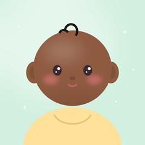

버튼 한 번에 재생
시작 버튼 한 번이면 백색소음이 나와요. 설정에서 ‘앱 켜면 바로 재생’을 켜면 아이콘만 눌러도 시작돼요. 15분부터 8시간까지 타이머를 정하면, 끝날 때 소리가 서서히 작아지고 앱이 꺼져요.
우리 아기 이름과 사진으로 꾸미는 밤하늘 백색소음 타이머예요. 정한 시간이 지나면 소리가 서서히 작아지며 꺼져요.

시작 버튼 한 번이면 백색소음이 나와요. 설정에서 ‘앱 켜면 바로 재생’을 켜면 아이콘만 눌러도 시작돼요. 15분부터 8시간까지 타이머를 정하면, 끝날 때 소리가 서서히 작아지고 앱이 꺼져요.
화이트·핑크·브라운 노이즈, 선풍기 바람, 잔잔한 빗소리, 포근한 파도가 있어요. 녹음 파일 없이 기기에서 바로 만들어요.
사진을 최대 7장 고르면 얼굴을 찾아 동그랗게 맞춰 줘요. 사진이 없으면 귀여운 아기 그림이 나와요.
화면을 어둡게 하고 음량을 조절할 수 있고, 화면이 꺼져도 계속 재생돼요. 알림에서 남은 시간을 보고 바로 끌 수 있어요.
부모와 보호자를 위한 도구예요. 의료기기가 아니며 숙면을 보장하지 않아요. 음량은 낮게, 기기는 아기와 떨어진 곳에 두세요.
계정, 연락처, 위치, 기기 식별자, 사용 기록은 수집하지 않아요.
이름과 사진은 앱 화면에 아기를 보여 주는 데에만 쓰여요. 모든 정보는 이 기기의 앱 전용 저장소에만 저장되고, 서버로 보내지 않아요. 앱에는 인터넷 권한, 광고, 분석 도구가 없어요. 사진 속 얼굴 찾기도 Android 기기 안의 기능으로만 처리해요.
설정의 ‘아기 이름·사진 바꾸기’에서 언제든 고치거나 지울 수 있어요. 앱을 삭제하면 모두 함께 지워져요. 클라우드 백업과 기기 간 이전에서도 제외돼요.
어떤 정보도 제3자에게 제공하거나 국외로 이전하지 않아요.
이 앱은 아기가 아니라 부모와 보호자가 사용하는 도구예요.
내용이 바뀌면 이 페이지에 시행일과 함께 알려 드려요.
이메일: twbtwb0606@gmail.com
A night-sky white noise timer you decorate with your baby's name and photos. When the time is up, the sound gently fades out and turns off.
Tap Start and the white noise begins. Turn on “Play when the app opens” in Settings to start with just the app icon. Set a timer from 15 minutes to 8 hours. At the end, the sound fades out and the app closes.
White, pink and brown noise, a fan, gentle rain and ocean waves, all generated right on the device with no recordings.
Pick up to 7 photos and the app finds your baby's face and frames it in a circle. No photos? Cute baby illustrations are shown instead.
Dim the screen, adjust the volume, and keep playing with the screen off. See the time left in the notification and stop it from there.
A tool for parents and caregivers. It is not a medical device and does not promise better sleep. Keep the volume low and the device away from your baby.
The app does not collect accounts, contacts, location, device identifiers or usage data.
The name and photos are used only to show your baby on the app screen. Everything is stored only in the app's private storage on this device and is never sent to a server. The app has no internet permission, ads or analytics. Face detection runs locally on the Android device.
You can edit or delete the name and photos at any time in Settings → “Baby's name & photos”. Uninstalling the app deletes everything. The data is excluded from cloud backup and device transfer.
No information is shared with third parties or transferred abroad.
The app is a tool for parents and caregivers, not for children to use.
Any changes will be posted on this page with a new effective date.
Email: twbtwb0606@gmail.com